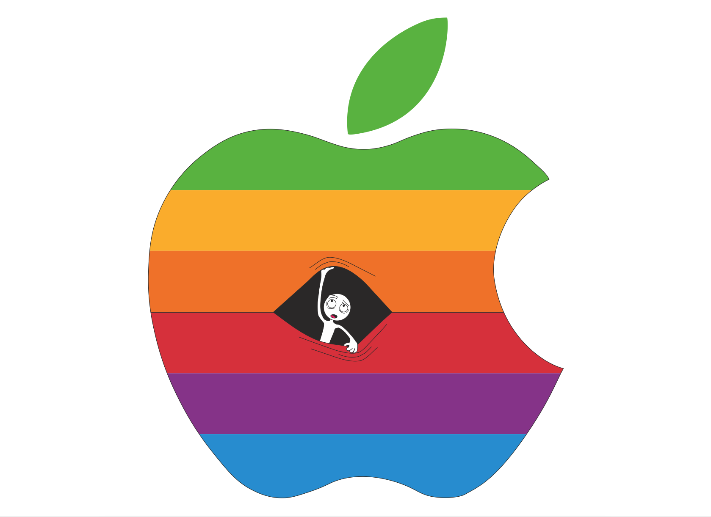

I broke the rules on this one. My Mobile App and Design (MAAD) teacher wanted the class to create six or seven apples and layer them to make the image. I, instead, made one apple and used the pen tool to make the lines and colors created. I then made the 'stranger' you see. What the person you see rerpresents is that anyone can find their way into anything technologocal nowadays.